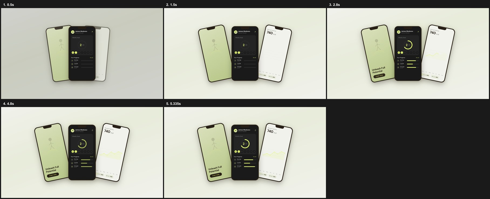
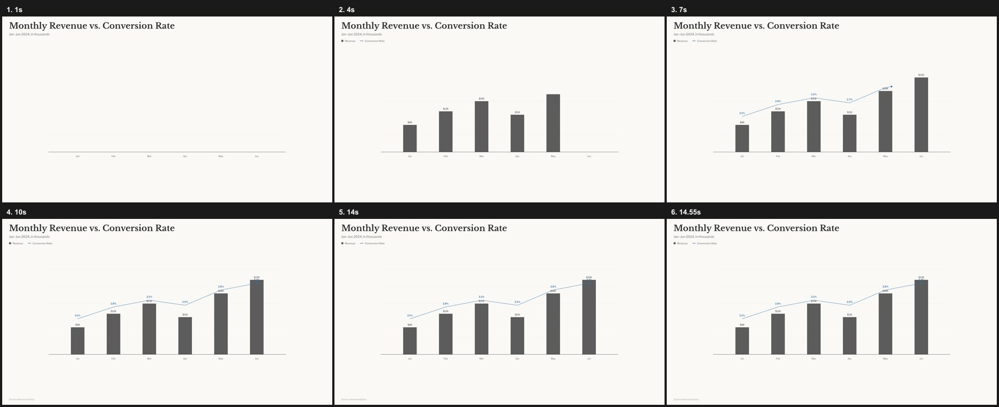
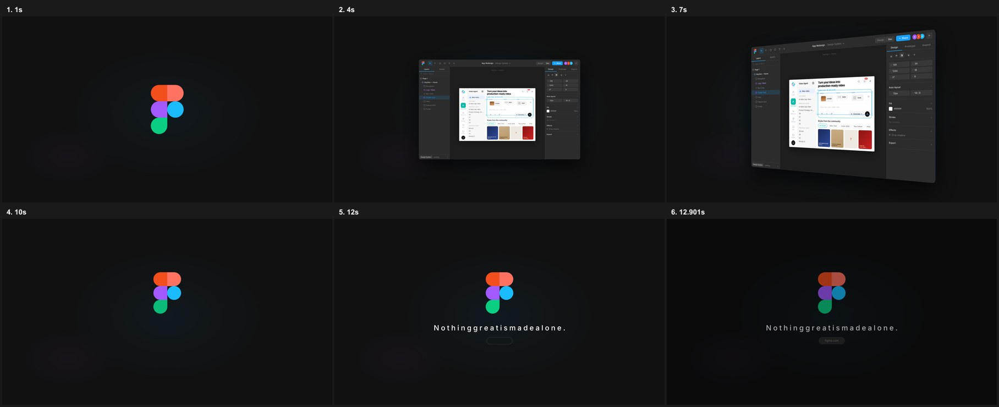

让画面帮助理解
HyperFrames 案例的讲解顺序、色彩角色与状态变化。
色值来自官方组件源码；图片为该组件的本地渲染采样，不代表画廊标题下的完整成片。参考音轨未听辨；尚未成为本项目已验证主题。
明亮产品展示
主体聚拢 → 左右展开 → 内部进度与图表更新 → 稳定收束
经验：先用空间建立主次，再让内容发生变化。
边界：浅底上的黄绿细线需要提高对比；三屏并行不适合新手跟做。

编辑式数据解释
标题/尺度 → 第一组事实 → 第二组关系 → 来源与稳定读图
经验：两种信息分时出现，用颜色保持它们的身份。
边界：没有可信数值不能画定量图；双指标同时上升不证明因果。

界面空间展示
识别 → 平面界面 → 推进聚焦 → 立体展示 → 收束
经验：先让人认出对象，再改变观察角度。
边界：教学动作回到正面；源码是Figma风格示例，不是Menza真实UI。

完整拆解与使用边界 · 复制经验卡 · 原始画廊